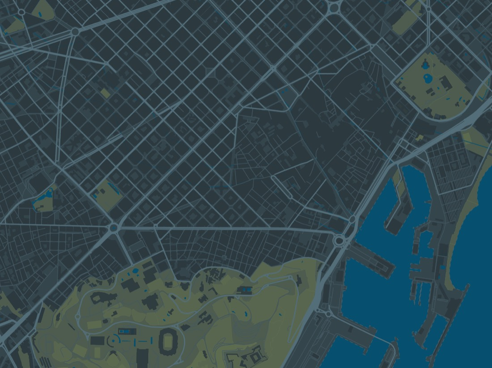
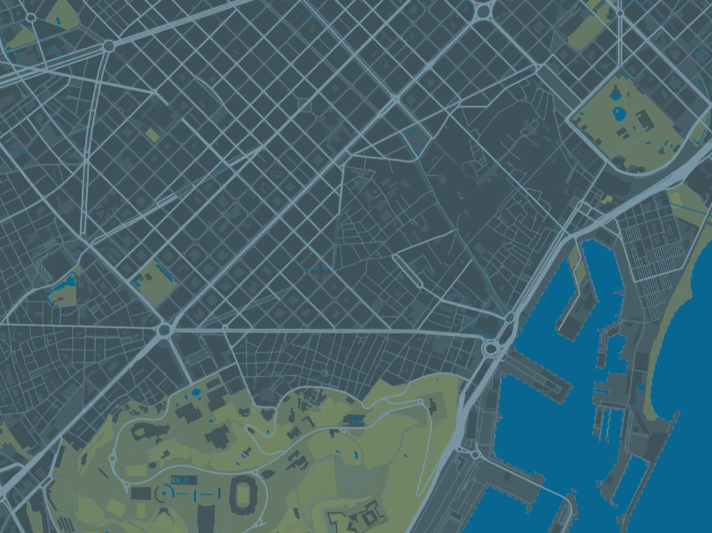
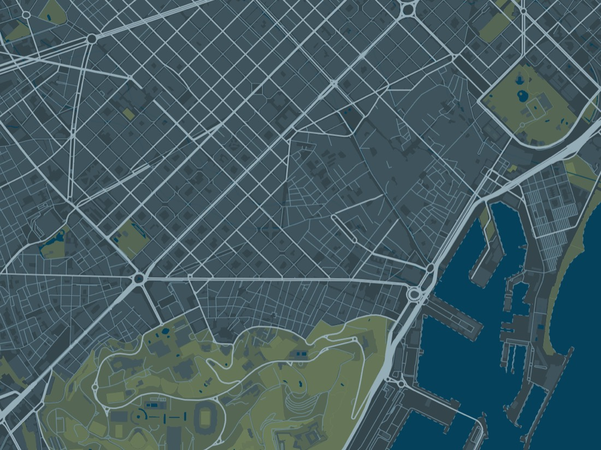
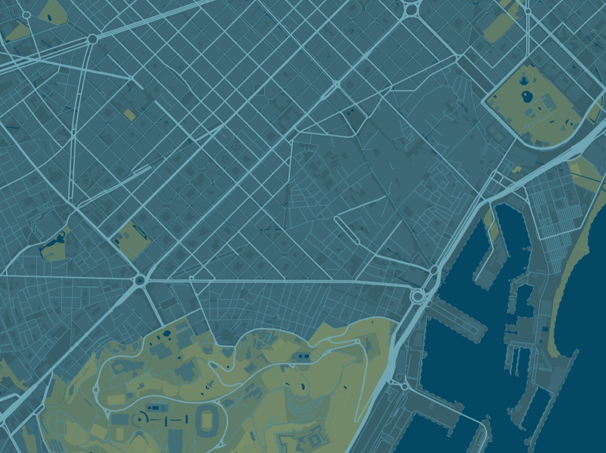

Variaciones sobre Slate, no direcciones nuevas: lo que se pide es «un poco más de contraste, un poco más claro», y contestar con tres ideas distintas convertiría la comparación en una cuestión de gusto en vez de en la variable que se está probando. Todas sobre Barcelona, en la franja real del hero (16:6) y con el scrim y los botones de verdad.
La restricción no es el texto. Donde están las palabras el scrim está al 86% de negro, así que casi cualquier mapa se lee debajo. La restricción es la parte alta, donde el scrim es solo del 12%: un mapa demasiado claro ahí deja de parecer parte de un sitio cuya barra y cuyo pie son negros y empieza a parecer una ventana recortada en la página. El color medido bajo cada tarjeta es justo ese.
La actual, de referencia
musubi-slateSlate Color for the land and Vandar Poel's Blue for the water, both straight from the dictionary, with the parks in a darkened Greenish Glaucous. The most map-like of the three: it still reads as a place rather than a graphic.

BARCELONA · CXEM ESPRONCEDA Y UB
Ven a probarVer el horario
Suelo bajo el 12% de scrim de la parte alta: #2E3D43.
Red sobre suelo 2.78:1 — cuanto más alto, más se lee la trama.
Propuesta 1
musubi-slate-litSlate con la tierra dos pasos más clara y el agua un punto más viva. El mismo mapa, con más aire. Es el cambio más pequeño de los tres y el que menos toca la relación con la barra negra.

BARCELONA · CXEM ESPRONCEDA Y UB
Ven a probarVer el horario
Suelo bajo el 12% de scrim de la parte alta: #3E535B.
Red sobre suelo 2.92:1 — cuanto más alto, más se lee la trama.
Propuesta 2
musubi-slate-inkLa tierra se queda donde está y sube la red: calles, arterias y autopistas mucho más claras sobre el mismo fondo. Es el que mejor dibuja la trama del Eixample, porque lo que se ve es la trama y no el suelo.

BARCELONA · CXEM ESPRONCEDA Y UB
Ven a probarVer el horario
Suelo bajo el 12% de scrim de la parte alta: #2E3D43.
Red sobre suelo 5.88:1 — cuanto más alto, más se lee la trama.
Propuesta 3
musubi-glaucousEl más claro de los tres, construido desde Light Glaucous Blue en vez de desde Slate Color. Frío y luminoso; el que más se aleja del negro del sitio y el que hay que mirar con más cuidado en la parte alta del hero.

BARCELONA · CXEM ESPRONCEDA Y UB
Ven a probarVer el horario
Suelo bajo el 12% de scrim de la parte alta: #30545D.
Red sobre suelo 3.41:1 — cuanto más alto, más se lee la trama.